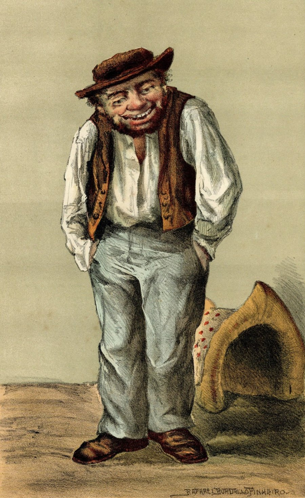

Rafael Bordalo Pinheiro, de la caricature politique à la faïence de Caldas da Rainha
Créateur de Zé Povinho et fondateur de la faïencerie de Caldas da Rainha, Rafael Bordalo Pinheiro a mené de front la satire de presse, au Portugal comme au Brésil, et la céramique d'art.

Dessinateur de presse, caricaturiste redouté, céramiste et décorateur : Rafael Bordalo Pinheiro (Lisbonne, 21 mars 1846 – 23 janvier 1905) a laissé au Portugal deux héritages qu'on croise encore tous les jours. Le premier est un personnage, Zé Povinho, devenu la figure du Portugais ordinaire. Le second est une manufacture de faïence dont les modèles sont toujours fabriqués à Caldas da Rainha. Lui-même signait « Bordallo », avec l'ancienne graphie à deux l que la marque de céramique a conservée.
Une famille de peintres
Fils du peintre et sculpteur romantique Manuel Maria Bordalo Pinheiro, l'un de huit enfants, il est aussi le frère aîné du peintre Columbano Bordalo Pinheiro. Au début des années 1880, il est le doyen du Grupo do Leão, le cercle des peintres naturalistes réunis autour de Silva Porto, avec José Malhoa et Columbano.
La presse comme champ de bataille
À la fin du XIXe siècle, la monarchie constitutionnelle s'use, les crises financières se succèdent et les gouvernements tombent. C'est dans ce contexte que Bordalo Pinheiro fait de la caricature son métier. En mai 1875, il lance A Lanterna Mágica avec les poètes Guerra Junqueiro et Guilherme de Azevedo, cachés derrière le pseudonyme collectif de Gil Vaz.
La même année, l'hebdomadaire satirique O Mosquito l'invite à Rio de Janeiro. Il reste près de quatre ans au Brésil, en devient propriétaire, puis fonde Psit!!! (1877), qui ne dure que deux mois, et O Besouro (1878-1879). La politique impériale et la vie quotidienne de Rio y passent sous son crayon.
Rentré à Lisbonne en 1879, il fonde O António Maria et ouvre une période de vingt-cinq ans pendant laquelle ses journaux paraissent presque chaque semaine, jusqu'à Pontos nos ii et A Paródia (1900). Ministres, clergé, bourgeoisie mondaine : personne n'échappe à son trait. Il y invente un langage graphique neuf (onomatopées, signes du mouvement, images-chocs), ce qui lui vaut d'être souvent considéré comme le premier auteur de bande dessinée portugais.
Zé Povinho, né la veille de la Saint-Antoine
Le personnage qui le rendra immortel naît le 12 juin 1875 dans A Lanterna Mágica. La date a son importance : c'est la veille de la fête de saint Antoine, patron de Lisbonne, et le premier Zé Povinho apparaît en train de verser son obole à la quête pour les cierges du saint. Le numéro porte pourtant la date du 19 juin, ce qui a longtemps entretenu un doute sur la date exacte.

Trapu, le chapeau sur la tête, Zé Povinho est le contribuable qui paie, qui encaisse les promesses des puissants et qui se tait. Mais il lui arrive de répondre, et sa réponse est restée célèbre : le manguito, ce bras d'honneur dont Bordalo a fait un emblème. Le dessin original est conservé au musée Bordalo Pinheiro. D'abord simple ressort comique, le personnage devient la personnification du peuple portugais. Il a fêté ses 150 ans en 2025, et les dessinateurs de presse le font toujours revivre.
Le regard tourné vers le Japon
Comme beaucoup d'artistes européens de son temps, Bordalo Pinheiro se passionne pour l'esthétique japonaise, révélée en Occident par les estampes ukiyo-e. Il s'est même représenté vêtu à la japonaise. En 2025, une exposition présentée à la Casa Ásia – collection Francisco Capelo, à Lisbonne, a été consacrée à cette influence, avec des céramiques et des dessins parus dans ses journaux et almanachs.
Caldas da Rainha : de l'encre à la terre
En 1884, avec son frère Feliciano, il fonde à Caldas da Rainha, ville thermale de vieille tradition potière, la Fábrica de Faianças das Caldas da Rainha. L'acte est signé le 9 août 1884 ; Rafael en prend la direction artistique. En 1888, les deux frères visitent des manufactures en France, en Belgique et en Angleterre pour en étudier les techniques.
Bordalo y transpose son sens de l'observation dans le volume. On y retrouve Zé Povinho, mais surtout une nature reproduite avec un naturalisme poussé jusqu'à l'illusion : feuilles de chou, homards, hirondelles.
En 1889, il décore le pavillon du Portugal à l'Exposition universelle de Paris. Ses céramiques y sont saluées et il est fait chevalier de la Légion d'honneur. L'une de ses pièces monumentales, la Jarra Beethoven, est conservée au Musée national des Beaux-Arts de Rio de Janeiro.
Où le retrouver aujourd'hui
À Lisbonne, le musée Bordalo Pinheiro (Campo Grande, 382) a été fondé par un collectionneur passionné, le poète républicain Artur Cruz Magalhães. Ouvert le 6 août 1916, c'est le premier musée du pays bâti spécialement pour l'œuvre d'un artiste. Une nouvelle exposition permanente y a été inaugurée le 15 janvier 2026.
Juste en face, de l'autre côté du Campo Grande, le jardin Bordallo Pinheiro, aménagé en 2010 autour du musée de Lisbonne (palais Pimenta), est peuplé de ses animaux de faïence agrandis, comme les guêpes géantes posées sur les buis. Un monument à l'artiste se dresse dans le jardin du Campo Grande depuis 1921, et la place lisboète où il est mort porte aujourd'hui son nom. Il repose au cimetière des Prazeres.
À Caldas da Rainha, la manufacture, devenue la marque Bordallo Pinheiro, reproduit toujours ses modèles selon des techniques plus que centenaires et invite des artistes contemporains comme Joana Vasconcelos à revisiter son univers. De la presse de combat aux arts de la table, Bordalo Pinheiro a réussi le rare pari d'une œuvre à la fois savante et populaire : le portrait d'un Portugal lucide, moqueur et ouvert sur le monde.